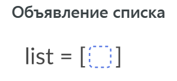
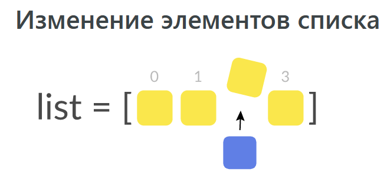
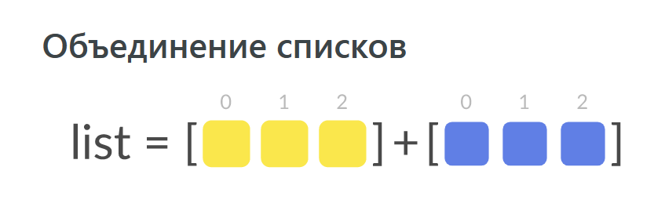

Базовая работа со списками
Объявление списка

Объявление списка — самый первый и главный этап его создания. Для объявления списка в Python существует несколько способов.
Вариант №1: Через литерал (выражение, создающее объект):
>>> elements = [1, 3, 5, 6] >>> type(elements)>>> print(elements) [1, 3, 5, 6]
В данном примере мы создали список с заранее известными данными. Если нужен пустой список, в квадратных скобках ничего не указывается — elements = [].
Вариант №2: Через функцию list():
>>> elements = list() >>> type(elements)>>> print(elements) []
В этом примере создается пустой список.
Обращение к элементу списка в Python

Чтобы обратиться к элементу списка, достаточно указать его индекс:
>>> elements = [1, 2, 3, 'word'] >>> elements[3] 'word'
Индекс — это порядковый номер элемента в списке. В примере выше индексы (позиции в списке) соответственно будут: 0, 1, 2, 3.
Нумерация элементов списка в Python начинается с нуля.
Существует также отрицательный индекс, рассмотрим на примере:
Отрицательные индексы работают справа налево (то есть индекс значения '1' — -4, а отрицательный индекс 'word' — -1.
Отрицательным индексом удобно пользоваться, когда необходимо обратиться к последнему элементу в списке, не высчитывая его номер. Любой конечный элемент будет с индексом, равным -1.
Добавление в список
В списках доступно добавление, изменение, удаление элементов. Рассмотрим каждый способ изменения элементов на примерах.

Для того чтобы добавить новый элемент в список, используется list.append(x), где list — список, x — нужное значение.
>>> elements = [1, 2, 3, 'word']
>>> elements.append('meow')
>>> print(elements)
[1, 2, 3, 'word', 'meow']
Для простого примера, рассмотрим создание списка с нуля с помощью метода append() :
>>> elements = []
>>> elements.append(1)
>>> elements.append('word')
>>> elements.append('meow')
>>> print(elements)
[1, 'word', 'meow']
Добавление в список на указанную позицию

Немаловажно обратить внимание на метод list.insert(i, x), где list — список, i — позиция, x — нужное значение.
>>> elements = [1, 2, 4] >>> print(elements) [1, 2, 4] >>> elements.insert(2, 3) >>> print(elements) [1, 2, 3, 4]
Изменение элементов списка

Изменение элементов списка происходит следующим образом: нужно выбрать элемент по индексу (порядковому номеру элемента) и присвоить новое значение.
>>> elements = [2, 4, 6] >>> elements[2] = 8 >>> print(elements) [2, 4, 8]
В примере выше мы заменили 6 на 8.
Не забывайте, что счёт начинается с нуля, и в данном списке цифра 6 это 2-й элемент
Удаление элемента из списка

Для удаление из списка используют инструкцию del list[i], где list — список, i — индекс (позиция) элемента в списке:
>>> elements = [1, "test", 5, 7] >>> del elements[1] >>> print(elements) [1, 5, 7]
Удалять можно как из текущего списка, так и из вложенных списков:
>>> my_list = ["hello", "world", "!"] >>> elements = [1, my_list, "ok"] >>> del elements[1][2] >>> print(elements) [1, ['hello', 'world'], 'ok']
Можно удалять целыми диапазонами:
>>> elements = [2, 4, 6, 8, 12]
>>> del elements[2:] # удаляем все элементы после 2-го элемента (включительно)
>>> print(elements)
[2, 4]
>>> elements = [2, 4, 6, 8, 12] >>> del elements[:3] # удаляем все элементы до 3-го элемента >>> print(elements) [8, 12] >>> elements = [2, 4, 6, 8, 12] >>> del elements[1:3] # удаляем от 1-го элемента включительно до 3-го элемента >>> print(elements) [2, 8, 12]
Еще один способ удаления из списка — list.remove(x), где list — список, x — значение, которое нужно удалить:
>>> elements = [2, "test", 4]
>>> elements.remove("test")
>>> print(elements)
[2, 4]
Как проверить наличие элемента в списке

Для того чтобы проверить существование какого-либо элемента в списке, нужно воспользоваться оператором in. Рассмотрим на примере:
>>> elements = ['слон', 'кот', 'лошадь', 'змея', 'рыба']
>>> if 'кот' in elements:
print('meow')
meow
Объединение списков

Списки в Python можно объединять с помощью оператора + или метода extend . Выглядит это так:
>>> a = [1, 3, 5] >>> b = [1, 2, 4, 6] >>> print(a + b) [1, 3, 5, 1, 2, 4, 6] >>> hello = ["h", "e", "l", "l", "o"] >>> world = ["w", "o", "r", "l", "d"] >>> hello.extend(world) # extends не возвращает новый список, а дополняет текущий >>> print(hello) ['h', 'e', 'l', 'l', 'o', 'w', 'o', 'r', 'l', 'd']
Копирование списка Python

Если вы захотите скопировать список оператором =, вы скопируете не сам список, а только его ссылку.
>>> a = [1, 2, 3] >>> b = a # переменной b присваивается не значение списка a, а его адрес >>> print(id(a), id(b)) 56466376 56466376 # a и b ссылаются на один и тот же список >>> b.append(4) >>> print(a, b) [1, 2, 3, 4] [1, 2, 3, 4]
Для копирования списков можно использовать несколько вариантов:
elements.copy() — встроенный метод copy (доступен с Python 3.3); list(elements) — через встроенную функцию list() ; copy.copy(elements) — функция copy() из пакета copy; elements[:] — через создание среза (устаревший синтаксис).
Рассмотрим на примере каждый из этих способов:
>>> a = ["кот", "слон", "змея"] >>> b = a.copy() >>> print(id(a), id(b), a, b) 56467336 56467016 ['кот', 'слон', 'змея'] ['кот', 'слон', 'змея'] >>> d = list(a) >>> print(id(a), id(d), a, d) 56467336 60493768 ['кот', 'слон', 'змея'] ['кот', 'слон', 'змея'] >>> import copy >>> e = copy.copy(a) # >>> print(id(a), id(e), a, e) 56467336 60491304 ['кот', 'слон', 'змея'] ['кот', 'слон', 'змея'] >>> f = copy.deepcopy(a) >>> print(id(a), id(f), a, f) 56467336 56467400 ['кот', 'слон', 'змея'] ['кот', 'слон', 'змея'] >>> c = a[:] # устаревший синтаксис >>> print(id(a), id(c), a, c) 56467336 60458408 ['кот', 'слон', 'змея'] ['кот', 'слон', 'змея']
Важно: copy.copy(a) делает поверхностное копирование. Объекты внутри списка будут скопированы как ссылки на них (как в случае с оператором =). Если необходимо рекурсивно копировать всех элементов в списке, используйте copy.deepcopy(a)
Скопировать часть списка можно с помощью срезов. Есть несколько вариантов использования:
>>> a = ["кот", "слон", "змея"] >>> b = a[2:] # с 2-го элемента (включительно) до конца списка >>> print(b) ['змея'] >>> c = a[:2] # с начала списка по 2-й элемент >>> print(c) ['кот', 'слон'] >>> d = a[1:2] # с 1-го элемента (включительно) по 2-й элемент >>> print(d) ['слон'] >>> a = [1, 2, 3, 4, 5, 6, 7, 8] >>> e = a[0:8:2] # c 0-го элемента по 8-й элемент с шагом 2 >>> print(e) [1, 3, 5, 7]
Цикл по списку

Для перебора списков в Python есть два цикла: for и while.
elements = [1, 2, 3, "meow"]
for el in elements:
print(el)
Результат выполнения:
1 2 3 meow
Попробуем построить цикл while. Он выполняется, когда есть какое-либо определённое условие:
elements = [1, 2, 3, "meow"]
elements_len = len(elements)
i = 0
while i < elements_len:
print(elements[i])
i += 1
Результат выполнения:
1
2
3
meow
Из примеров выше можем сделать вывод, что конструкция for выглядит заметно компактнее, чем while.
Методы списков
- list.append(x) — позволяет добавлять элемент в конец списка;
- list1.extend(list2) — предназначен для сложения списков;
- list.insert(i, x) — служит для добавления элемента на указанную позицию(i — позиция, x — элемент);
- list.remove(x) — удаляет элемент из списка (только первое вхождение);
- list.clear() — предназначен для удаления всех элементов (после этой операции список становится пустым []);
- list.copy() — служит для копирования списков.
- list.count(x) — посчитает количество элементов x в списке;
- list.index(x) — вернет позицию первого найденного элемента x в списке;
- list.pop(i) — удалит элемент из позиции i ;
- list.reverse() — меняет порядок элементов в списке на противоположный;
- list.sort() — сортирует список.
Пример использования методов:
# append
>>> a = [1, 2, 3]
>>> a.append(4)
print(a)
[1, 2, 3, 4]
# extend
>>> elements = [1, 2, 3, "meow"]
>>> elements.extend([4, 5, "gaf"])
>>> print(elements)
[1, 2, 3, 'meow', 4, 5, 'gaf']
# insert
>>> a = [1, 3, 4]
>>> a.insert(1, 2) # insert добавит на позицию 1 цифру 2
>>> print(a)
[1, 2, 3, 4]
# remove
>>> elements = [1, "meow", 3, "meow"]
>>> elements.remove("meow") # remove удалит только первое вхождение
>>> print(elements)
[1, 3, 'meow']
# clear
>>> a = [1, 2, 3]
>>> a.clear()
>>> print(a)
[]
# copy
>>> a = [1, 2, 3]
>>> b = a.copy()
>>> print(id(a), id(b), a, b)
60458408 60491880 [1, 2, 3] [1, 2, 3]
# count
>>> elements = ["one", "two", "three", "one", "two", "one"]
>>> print(elements.count("one"))
3
# index
>>> elements = ["one", "two", "three", "one", "two", "three"]
>>> print(elements.index("three")) # index вернет первый найденный индекс
2
# pop (положительный индекс)
>>> elements = [1, "meow", 3, "wow"]
>>> elements.pop(1) # удаляет элемент с индексом 1
'meow' # pop возвращает удаленный элемент списка
>>> print(elements)
[1, 3, 'wow']
# pop (отрицательный индекс) [удаление с конца списка, начиная с -1]
elements = ["hello", "world", "!"]
elements.pop(-2)
'world'
>>> print(elements)
['hello', '!']
# pop (без индекса) [удалит из списка последний элемент]
>>> elements = [1, 2, 3]
>>> elements.pop() # по умолчанию, в методе pop индекс равен -1
3
>>> print(elements)
[1, 2]
# reverse
>>> a = [1, 2, 3]
>>> a.reverse()
>>> print(a)
[3, 2, 1]
# sort (по возрастанию)
>>> elements = [3, 19, 0, 3, 102, 3, 1]
>>> elements.sort()
>>> print(elements)
[0, 1, 3, 3, 3, 19, 102]
# sort (по убыванию)
>>> elements = [3, 19, 0, 3, 102, 3, 1]
>>> elements.sort(reverse = True)
>>> print(elements)
[102, 19, 3, 3, 3, 1, 0]
Вложенные списки
Список может содержать объекты разных типов: числовые, буквенные, а также списки. Список списков выглядит следующим образом:
>>> elements = [1, 2, [0.1, 0.2, 0.3]] Для обращения к элементу вложенного списка нужно использовать два индекса: первый указывает на индекс главного списка, второй — индекс элемента во вложенном списке. Вот пример: >>> elements = [["яблоки", 50], ["апельсины", 190], ["груши", 100]] >>> print(elements[0]) ['яблоки', 50] >>> print(elements[1][0]) апельсины
Срезы
Срезы (slices) — это подмножества элементов списка. Срезу нужны, когда необходимо извлечь часть списка из полного списка.
У них есть свой собственный синтаксис. Записывается срез так же, как обращение к элементу, используя индекс. Пример:
elements[START:STOP:STEP]
В этом случае берётся срез от номера start (включительно) до stop (не включая его), а step — это шаг. По умолчанию start и stop равны 0, step равен 1.
>>> elements = [0.1, 0.2, 1, 2, 3, 4, 0.3, 0.4] >>> int_elements = elements[2:6] # с 2-го элемента включительно по 6-й элемент >>> print(id(elements), id(int_elements)) # elements и int_elements - 2 разных списка 53219112 53183848 >>> print(elements) [0.1, 0.2, 1, 2, 3, 4, 0.3, 0.4] # срез не модифицирует исходный список >>> print(int_elements) [1, 2, 3, 4]
Генераторы списков
Генератором списка называется способ построения списка с применением выражения к каждому элементу, входящему в последовательность. Есть схожесть генератора списка и цикла for. На этом примере мы рассмотрим простейший генератор списков:
>>> c = [c * 3 for c in 'list'] >>> print(c) ['lll', 'iii', 'sss', 'ttt']
Таким образом мы получили отдельно взятые утроенные буквы слова, введённого в кавычки. Есть множество вариантов применения генератора списков.
Пример генератора списка:
>>> nums = [i for i in range(1, 15)] >>> print(nums) [1, 2, 3, 4, 5, 6, 7, 8, 9, 10, 11, 12, 13, 14]
Пример посложнее:
>>> c = [c + d for c in 'list' if c != 'i' for d in 'spam' if d != 'a'] >>> print(c) ['ls', 'lp', 'lm', 'ss', 'sp', 'sm', 'ts', 'tp', 'tm']
Это усложнённая конструкция генератора списков, в которой мы сделали все возможные наборы сочетаний букв из введённых слов. Буквы-исключения видны по циклу, где стоит знак != для одной переменной и другой.
Решения практических задач, с которыми так или иначе сталкивается Python-разработчик.
Как получить список в обратном порядке
Изменить порядок размещения элементов в списке помогает функция list.reverse():
>>> elements = [1, 2, 3, 4, 5, 6] >>> elements.reverse() >>> print(elements) [6, 5, 4, 3, 2, 1]
Как перевести список в другой формат?
Иногда требуется перевести список в строку, в словарь или в JSON. Для этого нужно будет вывести список без скобок.
Перевод списка в строку осуществляется с помощью функции join(). На примере это выглядит так:
>>> fruits = ["яблоко", "груша", "ананас"]
>>> print(', '.join(fruits))
яблоко, груша, ананас
В данном случае в качестве разделителя используется запятая.
Словарь в Python — это такая же встроенная структура данных, наряду со списком. Преобразование списка в словарь — задача тоже несложная. Для этого потребуется воспользоваться функцией dict(). Вот пример преобразования:
>>> elements = [['1', 'a'],['2', 'b'],['3', 'c']]
>>> my_dict = dict(elements)
>>> print(my_dict)
{'1': 'a', '2': 'b', '3': 'c'}
JSON — это JavaScript Object Notation. В Python находится встроенный модуль json для кодирования и декодирования данных JSON. С применением метода json.dumps(x) можно запросто преобразовать список в строку JSON.
>>> import json >>> json.dumps(['word', 'eye', 'ear']) '["word", "eye", "ear"]'
Как узнать индекс элемента в списке?
Узнать позицию элемента в последовательности списка бывает необходимым, когда элементов много, вручную их не сосчитать, и нужно обращение по индексу. Для того чтобы узнать индекс элемента, используют функцию list.index(x).
>>> elements = [1, 3, 6, 9, 55]
>>> print(elements.index(9))
3
В качестве аргумента передаем значение, а на выходе получаем его индекс.
Как посчитать количество уникальных элементов в списке?
Самый простой способ — приведение списка к set (множеству). После этого останутся только уникальные элементы, которые мы посчитаем функцией len():
>>> words = ["one", "two", "one", "three", "one"]
>>> len(set(words))
3
Как проверить список на пустоту?
>>> a = []
>>> if not a:
print("список пуст!")
список пуст!
Как создать список числовых элементов с шагом
Создание списка числовых элементов с шагом может понадобиться не так и часто, но мы рассмотрим пример построения такого списка.
Шагом называется переход от одного элемента к другому. Если шаг отрицательный, произойдёт реверс массива, то есть отсчёт пойдёт справа налево. Вот так выглядит список с шагом.
>>> elements = [1, 2, 3, 4, 5, 8, 9, 10, 11, 14, 20] >>> print(elements[0:11:2]) [1, 3, 5, 9, 11, 20]
Еще один вариант — воспользоваться генератором списков:
>>> elements = [c for c in range(0, 10, 2)] # от 0 (включительно) до 10 с шагом 2 >>> print(elements) [0, 2, 4, 6, 8]